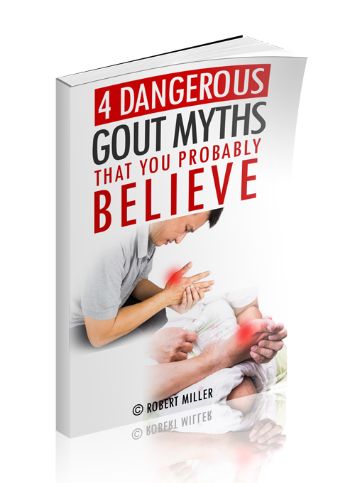

Are these four dangerous myths keeping
you from eradicating gout from your body?
As a former gout sufferer, sometimes I'm shocked by what I read on the Internet.
It's like some websites think it's amusing to intentionally post disproven myths about what causes gout!
For example, have you read any of the following:
- The MYTH that there is no permanent cure for gout
- The MYTH that you supposedly "need" to be prescribed expensive, long-term medications?
- The MYTH that it's all about uric acid and nothing else?
None of these myths are the answer to a fast and permanent gout solution.
More importantly, none of them even identify the problem correctly!
Robert Miller, former gout sufferer turned advocate here. In my free short report: "4 DANGEROUS Gout Myths that You Probably Believe" I seek to help you separate fact from fiction by cutting through the misleading noise of the Internet, and describe what actually goes on in the body as the ills of gout set in.
Then, we talk about a powerful way to cure your gout FOR GOOD in 7 days or less!
Enter your information below to receive this FREE report instantly to your email inbox:

[opt in code goes here]